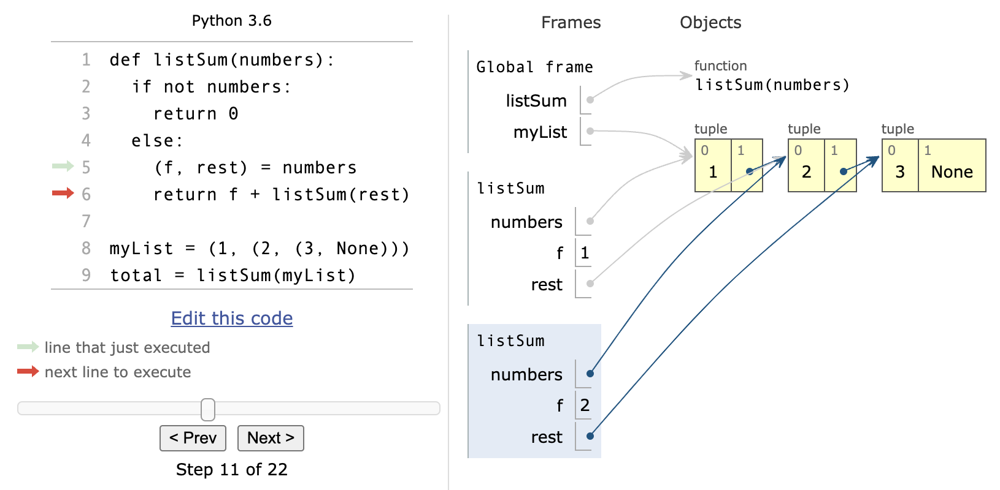

I Want a Memory Diagram Generator
Following up on last week’s grumble about what I want for writing code examples in books, I’d like to make another request. I’m a big fan of Guo et al’s online program visualizer, which animates memory diagrams like the one below as users single-step through code:

I want a tool that will let me specify a program, its inputs, and a specific instant in its execution, and will then run the program to that instant, generate the memory diagram, and save it in a scalable file format like SVG. Specifying the point at which I want the diagram is the hard part: “stop at line 36” isn’t enough, since I might want to stop at that line on the fourth call or when the program is five levels deep in recursive calls.
What would specify an instant in a program’s execution look like? I’m a lousy UX designer, so please don’t take this proposal too seriously, but I imagine something with two parts:
-
A notation for specifying logical locations in source code similar to DOM selectors, XPath, or JSONPath. For example,
pokey.clusp.marther[3:5]would be the third through fifth statements of themarthermethod in thecluspclass of thepokeypackage. (I did warn you not to take my design too seriously…) -
A second notation that would build on the first to specify call chains, repetition counts, etc., so that users could say, “This point the thirty-third time it’s encountered,” or, “That point but only when the variable
nobbleis not null.” (I did warn you…)
That tool would be tremendously valuable, and would open the door to others: I could, for example, specify a dozen such stopping points in a program and a comment to display when each was encountered in order to give readers a guided tour of a program’s execution. And if the whole thing came with a diagram diff tool that would tell users when one or more diagrams had changed with respect to earlier versions, there’d be much less risk of code, diagrams, and descriptions getting out of sync. I realize these tools would be a lot of work to build, particularly if they were to be cross-language, but the benefits would be enormous.